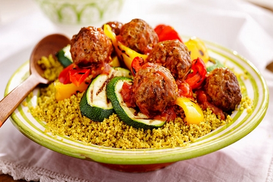
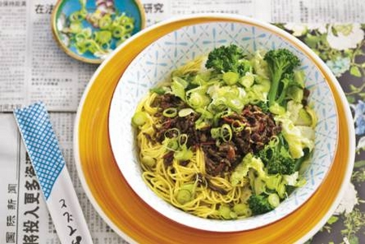
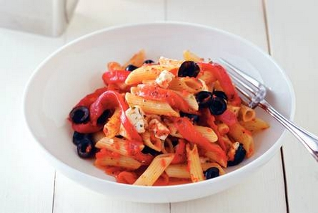

Couscous met gehaktballetjes en gegrilde groenten
Ingrediënten:
- 250 gr. gehakt
- 1 grote ui
- 1 courgette
- 1 rode paprika
- 2 tomaten
- 2 eetlepels tomatenpuree (blikje of fles)
- 1 ei
- 1 theelepel cajunkruiden
- zakje couscous
- olie of boter om in te bakken

Bereiding:
Stap 1: Snij de ui in héle kleine stukjes. Voeg de ui, het ei, de kruiden en de gehakt samen en kneed het tot een geheel.
Stap 2: Van het gehaktmengsel moeten balletjes worden gemaakt en bak ze mooi bruin in de olie of boter. Gebruik hiervoor een koekenpan.
Stap 3: Snij de courgette, de paprika en tomaten in blokjes en voeg ze aan de balletjes toe.
Stap 4: Bereid de couscous volgens de gebruiksaanwijzing.
Stap 5: Serveer de balletjes erop of apart. (Eventueel aan te vullen met een groene salade)
Maleisische kippensoep
Ingrediënten:
- 2 el olie
- 350 g kipfiletblokjes
- 400 g Thaise roerbakmix
- ½ el Thaise groene currypasta
- 400 ml kokosmelk
- 5 dl kraanwater
- 250 g mihoen
- 3 el Thaise vissaus
Bereiding:
Stap 1: Verhit de olie in een wok of braadpan. Bak de kip op hoog vuur al omscheppend ca. 2 min.
Stap 2: Voeg de groenten toe en bak nog ca. 2 min. mee. Schep de currypasta erdoor.
Stap 3: Schenk de kokosmelk en het water erbij en breng aan de kook. Kook nog ca. 3 min. Breng ondertussen een pan water aan de kook.
Stap 4: Kook de noedels ca. 15 sec. en laat uitlekken. Verdeel de noedels over diepe borden. Breng de soep op smaak met vissaus en schep op de noedels.
Dandan noedels
Ingrediënten:
- 3 cm verse gember (zakje 150 g)
- 1 rode peper
- 2 tenen knoflook
- ½ Chinese kool
- 2 el arachideolie
- 300 g rundergehakt
- 2 el balsamicoazijn
- 3 el Japanse sojasaus
- 250 g Chinese eiermie (pak 250 g)
- 1 el sesamolie
- 1 liter kraanwater
- 2 runderbouillontabletten
- 200 g bimi (schaal 200 g)

Bereiding:
Stap 1: Schil de gember en rasp fijn. Snijd het steeltje van de rode peper, verwijder de zaadlijsten en snijd het vruchtvlees in dunne reepjes.
Stap 2: Snijd de knoflook fijn en de kool in reepjes.
Stap 3: Verhit de zonnebloemolie in een wok en roerbak de gember, peper en knoflook een 1/2 min. Voeg het gehakt toe en roerbak in 5 min. rul.
Stap 4: Voeg de azijn en sojasaus toe en bak op middelhoog vuur tot het gehakt een beetje krokant is.
Stap 5: Kook ondertussen de mie volgens de aanwijzingen op de verpakking. Giet af, doe in een schaal en meng de sesamolie erdoor. Verdeel over de kommen.
Stap 6: Breng tegelijkertijd met de mie het water aan de kook en los de bouillontabletten erin op. Voeg de kool en bimi toe. Kook in 4 min. beetgaar.
Stap 7: Schep de groenten eruit en verdeel over de mie. Schep het gehakt erop en schenk de bouillon erover. Bon appétit!
Penne met paprika en kaas
Ingrediënten:
- 250 g penne (pasta, zak 500 g)
- 2 potten gegrilde paprika's ((295 g), uitgelekt)
- 1 teen knoflook (geperst)
- 2 tl paprikapoeder (pikant)
- 1 el gedroogde Italiaanse keukenkruiden
- 1 potje witte kaasblokjes (300 g)
- 1/2 potje zwarte, pitloze, gehalveerde olijven (à 240 g)
Keukenspullen:
- blender
- lage ovenschaal (20 x 30 cm)

Bereiding:
Stap 1: Verwarm de oven voor op 200 °C. Vet alvast de ovenschaal in.
Stap 2: Kook de penne volgens de aanwijzingen op de verpakking beetgaar.
Stap 3: Pureer de helft van de paprika's in de blender.
Stap 4: Meng de gepureerde paprika's, de knoflook, het paprikapoeder, de Italiaanse kruiden en 4 el olie van de kaasblokjes erdoor. Voeg evt. peper en zout toe.
Stap 5: Snijd de rest van de paprika's in repen. Giet de pasta af en roer de paprikasaus erdoor.
Stap 6: Schep de paprikarepen, kaasblokjes en olijven erdoor en schep de pasta in de ovenschaal.
Stap 7: Laat de pasta in de oven in 25 min. door en door heet worden en de kaas smelten. Lekker met een groene salade.